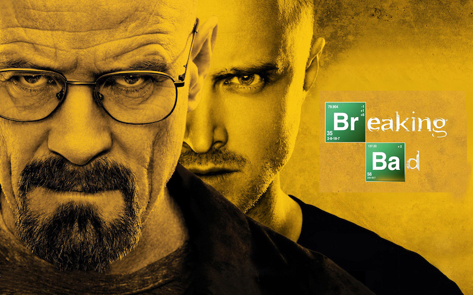
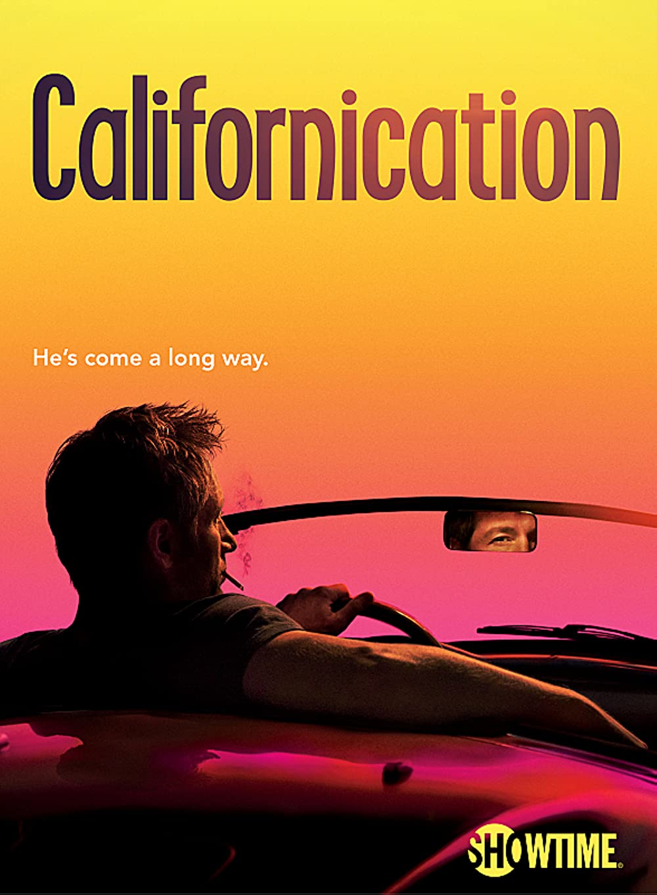

Breaking Bad
- Crime
- Drama
- Thriller
Genres
Breaking Bad is an American crime drama television series created and produced by Vince Gilligan. Set and filmed in Albuquerque, New Mexico, the series follows Walter White (Bryan Cranston), an underpaid, overqualified, and dispirited high-school chemistry teacher who is struggling with a recent diagnosis of stage-three lung cancer. White turns to a life of crime and partners with a former student, Jesse Pinkman (Aaron Paul), to produce and distribute crystal meth to secure his family's financial future before he dies, while navigating the dangers of the criminal underworld. The show aired on AMC from January 20, 2008, to September 29, 2013, consisting of five seasons for a total of 62 episodes.
Friends

- Comedy
- Romance
Genres
Friends is an American television sitcom created by David Crane and Marta Kauffman, which aired on NBC from September 22, 1994, to May 6, 2004, lasting ten seasons.[1] With an ensemble cast starring Jennifer Aniston, Courteney Cox, Lisa Kudrow, Matt LeBlanc, Matthew Perry and David Schwimmer, the show revolves around six friends in their 20s and 30s who live in Manhattan, New York City. The series was produced by Bright/Kauffman/Crane Productions, in association with Warner Bros. Television. The original executive producers were Kevin S. Bright, Kauffman, and Crane.
Californication
- Comedy
- Drama
Genres
Californication is an American comedy-drama television series, created by Tom Kapinos, which aired for seven seasons on Showtime from August 13, 2007, to June 29, 2014. The show follows New Yorker Hank Moody (David Duchovny), a troubled novelist who moves to California and suffers from writer's block. His drinking, womanizing, and drug abuse complicate his relationships with his longtime lover, Karen (Natascha McElhone), and their daughter, Becca (Madeleine Martin). The show's other main characters are Hank's best friend and agent Charlie Runkle (Evan Handler) and Charlie's wife Marcy (Pamela Adlon). Recurring themes are sex, drugs, and rock and roll, all of which are featured regularly, as well as the seedier side of Los Angeles. The show won several awards, including two Emmy Awards (nominated for two others) and one Golden Globe Award (nominated for five others).